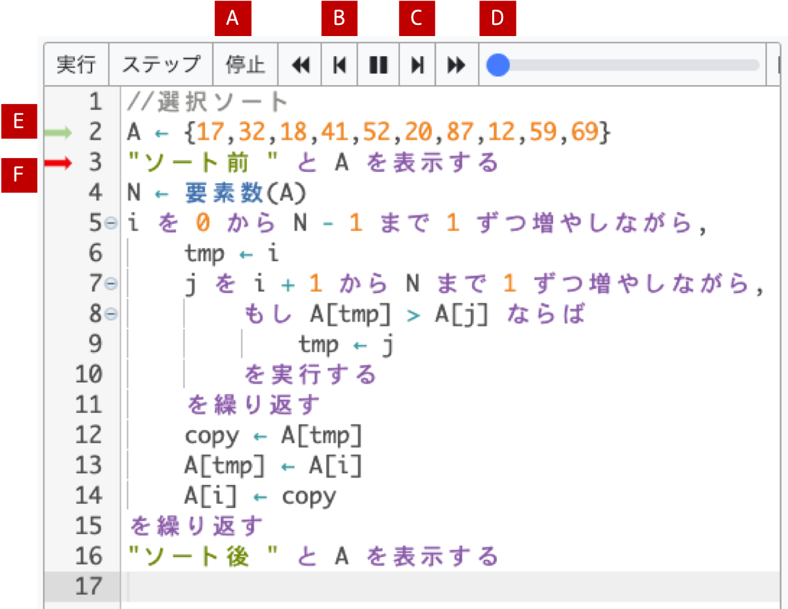

XTetra IDE 使用マニュアル
概要
XTetra IDEは、ブラウザ上で実際にDNCLを書いて、実行させることができるものです。
以下のリンクからアクセスできます：
XTetraはこちら
画面構成

| 番号 | 内容 | 説明 |
|---|---|---|
| ① | プログラム | ここにDNCLでプログラムを記述します。 |
| ② | コンソール | ①で書いたプログラムの実行結果がここに出力されます。 |
| ③ | ビュワー | 出てきた変数について、どのような値が入っているか。 |
勉強の方法
プログラムの問題を解くコツ、それは２つあります。
- プログラムの中のどこの行を実行しているのか理解すること
- でてきた変数の値を把握すること
しかしプログラムがどのように動いているか、最初はイメージがつきにくいものです。なのでこの２つを可視化してくれるXTetraを使うのです。
処理の流れがわかりにくいループなどに使ってください。
操作方法
公式の説明も併せて読んでみてね
- ①の中にプログラムを記述する
- ①の「ステップ」を押すことで、１行ずつプログラムの行程を確認することができます。 
- [B]を押すことで前のステップへ、[C]を押すことで次のステップへ進みます。[D]はスクロールでステップを確認できます。
- これでプログラムの中のどこの行を実行しているのか理解することができます。
- 変数に代入などが起こるたびに、②コンソール部分の変数が変化していきます。
- この場合、[E]の緑色矢印の箇所を実行した直後の変数の値になります。
- これででてきた変数の値を把握することができます。
- [E]の赤色矢印は、これから実行するプログラム１行を指します。
- ①の左上の「実行」を押すことで、行程をすっ飛ばしてプログラムの結果だけを見ることができます。
- [A]のボタンを押してから、プログラムの修正をしてください。